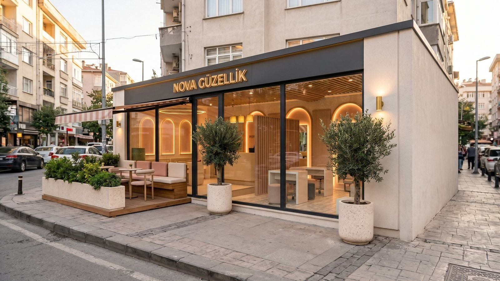
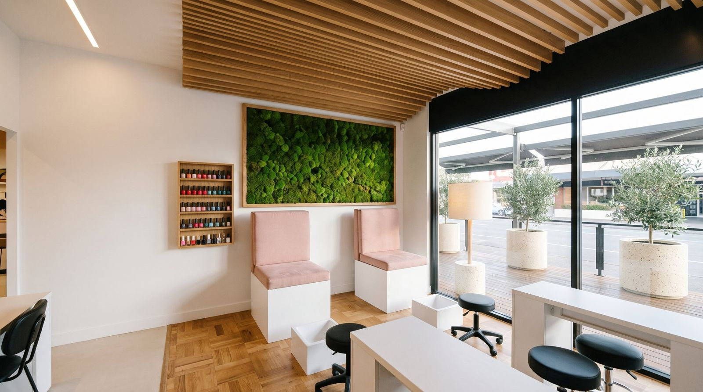
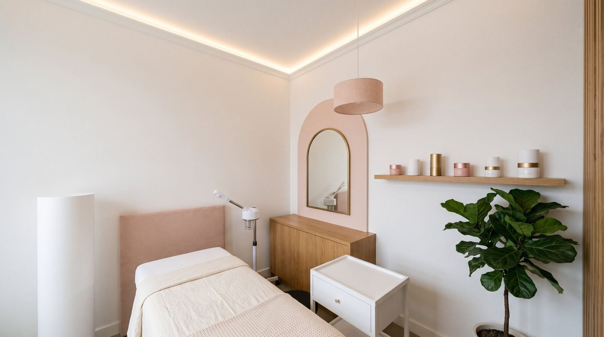

Güzellik merkezi açmak; doğru yetki belgeleri, ruhsat, cihaz seçimi ve müşterinin kendini iyi hissedeceği bir mekân gerektirir. Bu sektörde mekânın kendisi de ürünün bir parçasıdır: Müşteri hizmeti satın alırken atmosferi de satın alır. Bu yazıda güzellik salonu ve merkezi açarken bilinmesi gereken kuralları ve tasarımda dikkat edilmesi gerekenleri anlatıyoruz.
Bu yazı genel bilgilendirme amaçlıdır. Özellikle cihazlı uygulamalara ilişkin kurallar sık değişebildiği için başvuru ve yatırım öncesinde güncel mevzuatı belediyenizden ve uzmanınızdan teyit edin.
Güzellik salonları, İşyeri Açma ve Çalışma Ruhsatlarına İlişkin Yönetmelik kapsamında belediyeden (veya ilgili yetkili idareden) alınan işyeri açma ve çalışma ruhsatıyla faaliyet gösterir. Yönetmelikte güzellik salonları için ortak hükümlere ek olarak ayrı şartlar belirlenmiştir. Güzellik salonları sıhhi müessese grubundadır; sıhhi işyerlerinde başvuru ve beyan formuyla yapılan başvuru şartlara uygunsa ruhsat düzenlenir, işyeri ise ruhsat tarihinden itibaren belirli süre içinde yerinde kontrol edilir.
Güzellik salonlarıyla ilgili bilgiler il sağlık müdürlüğüne de bildirilir ve denetimlerde il sağlık müdürlüğü temsilcisi de yer alabilir. Botoks, dolgu gibi tıbbi işlemler ise güzellik salonlarının değil, hekimlerin ve sağlık kuruluşlarının yetki alanındadır.
Güzellik salonu ruhsatında, hizmeti veren kişilerin ilgili alanda yetkili olduğunu gösteren belgeler aranır: 3308 sayılı Kanun kapsamında alınan ustalık belgesi, mesleki ve teknik okulların ilgili alanından ya da üniversitelerin ilgili bölümlerinden mezuniyet gibi. Belgenin alanı da önemlidir; örneğin yalnızca “cilt bakımı ve makyaj” alanında ustalık belgesi olan biri için güzellik salonu ruhsatı yerine farklı unvanlı bir ruhsat gündeme gelebilir. Yatırımdan önce kimin adına ve hangi faaliyet konusunda ruhsat alınacağını netleştirin.
Epilasyon ve diğer cihazlı uygulamalar, güzellik merkezlerinde en çok yatırım yapılan ama hukuken en çok değişen alandır. Güzellik salonlarında kullanılabilecek IPL ve diode lazer cihazlarına ilişkin teknik sınırlar yönetmelikte düzenlenmiş; bu düzenlemeler zaman içinde değiştirilmiş ve yargı kararlarına da konu olmuştur. Bu nedenle:



Güzellik merkezi, kuaför ve diğer ticari mekân projelerimizden örnekler için Ticari Mekân Tasarlatırken Dikkat Edilecekler yazımıza göz atabilirsiniz.
Belediyeden (veya yetkili idareden) İşyeri Açma ve Çalışma Ruhsatlarına İlişkin Yönetmelik kapsamında işyeri açma ve çalışma ruhsatı alınır; yönetmelikte güzellik salonları için ek şartlar bulunur.
Hizmeti verecek kişilerin ilgili alanda ustalık belgesi veya ilgili okul/bölüm diploması gibi yetki belgelerine sahip olması gerekir. Belgenin alanı, alınabilecek ruhsatın türünü de etkileyebilir.
Güzellik salonlarında kullanılabilecek epilasyon cihazlarına ilişkin kurallar yönetmelik değişiklikleri ve yargı kararlarıyla zaman içinde değişmiştir. Cihaz yatırımından önce güncel durumu mutlaka teyit edin.
Tapuda mesken olarak kayıtlı dairelerde işyeri açılması, kat maliklerinin oybirliğiyle vereceği karar gibi şartlara bağlı olabilir. Tapuda işyeri/dükkân niteliğindeki mekânlar daha sorunsuzdur.
Bu konuda profesyonel destek almak isterseniz projelerimiz sayfasını inceleyebilirsiniz.
Arsanızı, binanızı ya da hayalinizdeki mekânı anlatın; size nasıl bir yol izleyebileceğimizi birlikte konuşalım.